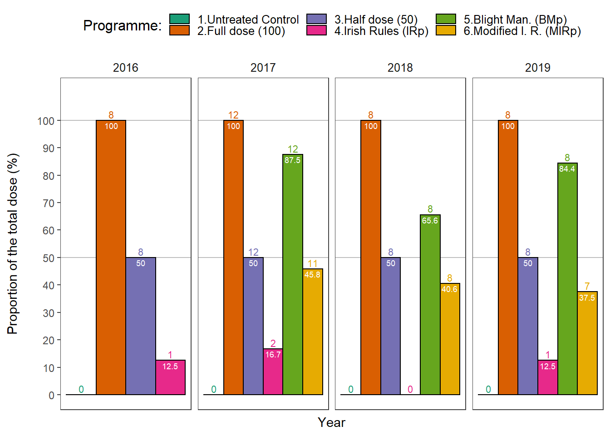
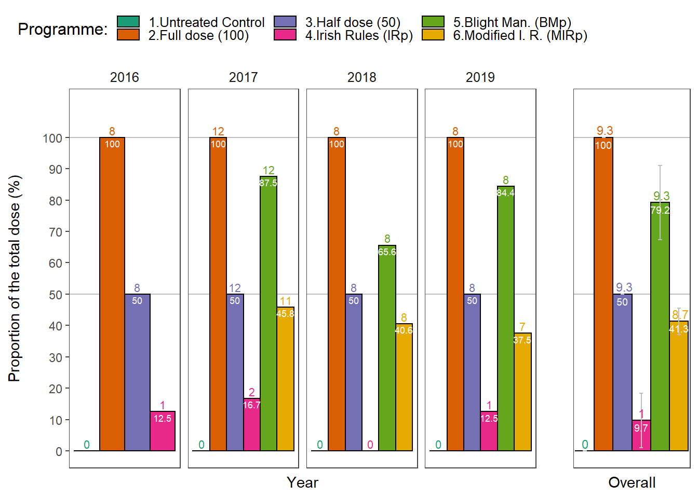

Sprays
Treatments analysis
Number of treatments and proportion of the total dose used in fungicide trials.
Load packages
list.of.packages <-
c(
"tidyverse",
"devtools",
"egg",
"hrbrthemes",
"sjPlot",
"effects",
"lsmeans",
"multcomp",
"multcompView",
"ggpubr",
"tableHTML",
"conflicted"
)
new.packages <-
list.of.packages[!(list.of.packages %in% installed.packages()[, "Package"])]
#Download packages that are not already present in the library
if (length(new.packages))
install.packages(new.packages)
packages_load <-
lapply(list.of.packages, require, character.only = TRUE)
#Print warning if there is a problem with installing/loading some of packages
if (any(as.numeric(packages_load) == 0)) {
warning(paste("Package/s: ", paste(list.of.packages[packages_load != TRUE], sep = ", "), "not loaded!"))
} else {
print("All packages were successfully loaded.")
}## [1] "All packages were successfully loaded."rm(list.of.packages, new.packages, packages_load)
#Resolve conflicts
if(c("stats", "dplyr")%in% installed.packages()){
conflict_prefer("filter", "dplyr")
conflict_prefer("select", "dplyr")
}
#if instal is not working try
#install.packages("ROCR", repos = c(CRAN="https://cran.r-project.org/"))Data import
tab <-
read_csv(here::here("data", "treat", "Treatments.csv"))
years <-
tab %>%
group_by(Year) %>%
summarise(counts =n())
year_names <- unique(tab$Year)
tab[, "Year"] <- NULL
html_tab <-
tableHTML::tableHTML(
tab,
rownames = FALSE,
row_groups = list(c(years$counts), c(year_names)),
widths = c(50, 60, 70, rep(40, 6))
) %>%
# add_css_header(css = list('background-color', 'lightgray'), headers = c(1:ncol(tab)+1)) %>%
add_css_row(css = list('background-color', 'lightgray'),
rows = c(2:9, 22:29)) %>%
add_theme('scientific')
tableHTML_to_image(
html_tab,
file = here::here("results", "treat", "Programme theme.png"),
type = "png"
)
dosedf <- readRDS(file = here::here("data", "treat", "full_trt.rds") )
dosedf <- rename(dosedf, dose = Dose)
dosedf <-
dosedf %>%
ungroup() %>%
mutate(treatment = ifelse(treatment == "Control", "Untreated Control",
ifelse(treatment == "Full Dose" , "Full dose (100)",
ifelse(treatment == "Half Dose", "Half dose (50)",
ifelse(treatment == "Irish R.", "Irish Rules (IRp)",
ifelse(treatment == "Blight Man. (DK)", "Blight Man. (BMp)",
ifelse(treatment == "Mod. I. Rules", "Modified I. R. (MIRp)", "")))))))
dosedf$treatment <-
factor(dosedf$treatment,
levels = c("Untreated Control", "Full dose (100)","Half dose (50)","Irish Rules (IRp)","Blight Man. (BMp)" ,"Modified I. R. (MIRp)"))The charts
# dosedf <- rename(dosedf, dose = Dose)
#Get number of treatments per year and the dose reduction
Summary <- function(x) {
data.frame(
n = length(x),
treatments = sum(as.numeric(x != 0)),
dose = round(sum(x) / length(x), 1)
)
}
p1 <-
dosedf %>%
group_by(year, treatment) %>%
do(Summary(.$dose)) %>%
ggplot(aes(
x = year,
y = dose,
fill = treatment,
group = treatment
)) +
geom_hline(yintercept = 50, colour = "gray")+
geom_hline(yintercept = 100, colour = "gray")+
geom_bar(
color = "black",
stat = "identity",
position = position_dodge(),
width = 0.9,
size = 0.5
) +
geom_text(
aes(label = treatments),
vjust = -0.3,
color = "black",
position = position_dodge(0.9),
size = 2.9
) +
geom_text(
aes(label = dose),
vjust = 1.3,
color = "white",
position = position_dodge(0.9),
size = 2.4
) +
scale_fill_brewer("Programme:", palette = "Dark2") +
scale_y_continuous(limits = c(0, 110), breaks = seq(0, 100, 10)) +
theme_article() +
facet_grid(~ year, scales = "free") +
labs(x = "Year",
y = "Proportion of the total dose (%)\n") +
theme(
axis.title = element_text(size = 11),
panel.grid.major = element_blank(),
panel.grid.minor = element_blank(),
axis.text = element_text(size = 9),
legend.position = "top",
axis.text.x = element_blank(),
axis.ticks.x = element_blank()
)+
theme(text = element_text(size=14))
p1
dose_summary <-
dosedf %>%
group_by(year, treatment) %>%
do(Summary(.$dose))
p2 <-
dose_summary %>%
group_by(treatment) %>%
filter(year != 2016) %>%
summarise(mean_trt = round(mean(treatments),1),
mean = round(mean(dose),1),
sd = sd(dose)) %>%
ggplot(., aes(
x = treatment,
y = mean,
fill = treatment,
group = treatment
)) +
geom_hline(yintercept = 50, colour = "gray") +
geom_hline(yintercept = 100, colour = "gray") +
geom_bar(
color = "black",
stat = "identity",
position = position_dodge(),
width = 1,
size = 0.5
) +
geom_errorbar(aes(ymin = mean - sd,
ymax = mean + sd),
width = 0.2,
color = "gray") +
scale_fill_brewer("Programme:", palette = "Dark2") +
theme_article() +
scale_y_continuous(limits = c(0, 110), breaks = seq(0, 100, 20)) +
theme(
axis.title = element_text(size = 11),
panel.grid.major = element_blank(),
panel.grid.minor = element_blank(),
axis.text = element_text(size = 11),
legend.position = "none",
axis.text.x = element_blank(),
axis.ticks.x = element_blank(),
legend.text=element_text(size=10)
)
p2 <-
p2 +
labs(x = "Overall", y= "")+
theme(axis.text = element_blank(),
axis.ticks.y = element_blank())+
theme(legend.position = "none")+
geom_text(
aes(label = mean_trt),
vjust = -0.3,
hjust = 0.4,
color = "black",
position = position_dodge(0.9),
size = 3
) +
geom_text(
aes(label = mean),
vjust = 1.4,
hjust = 0.5,
color = "white",
position = position_dodge(0.9),
size = 2.5
) +
# coord_equal(2 / 1)+
theme(text = element_text(size=14))
p <- egg::ggarrange(p1, p2, ncol = 2, widths = c(4,1))
ggsave( here::here("results", "treat", "Treatments.png"),
plot = p,
width = 7.5,
height = 4)session_info()## - Session info ----------------------------------------------------------
## setting value
## version R version 3.6.1 (2019-07-05)
## os Windows 10 x64
## system x86_64, mingw32
## ui RTerm
## language (EN)
## collate English_United States.1252
## ctype English_United States.1252
## tz Europe/London
## date 2019-12-19
##
## - Packages --------------------------------------------------------------
## package * version date lib source
## assertthat 0.2.1 2019-03-21 [1] CRAN (R 3.6.1)
## backports 1.1.5 2019-10-02 [1] CRAN (R 3.6.1)
## bayestestR 0.4.0 2019-10-20 [1] CRAN (R 3.6.1)
## boot 1.3-22 2019-04-02 [2] CRAN (R 3.6.1)
## broom 0.5.2 2019-04-07 [1] CRAN (R 3.6.1)
## callr 3.3.2 2019-09-22 [1] CRAN (R 3.6.1)
## carData * 3.0-2 2018-09-30 [1] CRAN (R 3.6.0)
## cellranger 1.1.0 2016-07-27 [1] CRAN (R 3.6.1)
## cli 1.1.0 2019-03-19 [1] CRAN (R 3.6.1)
## coda 0.19-3 2019-07-05 [1] CRAN (R 3.6.1)
## codetools 0.2-16 2018-12-24 [2] CRAN (R 3.6.1)
## colorspace 1.4-1 2019-03-18 [1] CRAN (R 3.6.1)
## conflicted * 1.0.4 2019-06-21 [1] CRAN (R 3.6.1)
## crayon 1.3.4 2017-09-16 [1] CRAN (R 3.6.1)
## DBI 1.0.0 2018-05-02 [1] CRAN (R 3.6.1)
## desc 1.2.0 2018-05-01 [1] CRAN (R 3.6.1)
## devtools * 2.2.1 2019-09-24 [1] CRAN (R 3.6.1)
## digest 0.6.22 2019-10-21 [1] CRAN (R 3.6.1)
## dplyr * 0.8.3 2019-07-04 [1] CRAN (R 3.6.1)
## effects * 4.1-3 2019-10-27 [1] CRAN (R 3.6.1)
## egg * 0.4.5 2019-07-13 [1] CRAN (R 3.6.1)
## ellipsis 0.3.0 2019-09-20 [1] CRAN (R 3.6.1)
## emmeans * 1.4.2 2019-10-24 [1] CRAN (R 3.6.1)
## estimability 1.3 2018-02-11 [1] CRAN (R 3.6.0)
## evaluate 0.14 2019-05-28 [1] CRAN (R 3.6.1)
## extrafont 0.17 2014-12-08 [1] CRAN (R 3.6.0)
## extrafontdb 1.0 2012-06-11 [1] CRAN (R 3.6.0)
## forcats * 0.4.0 2019-02-17 [1] CRAN (R 3.6.1)
## foreign 0.8-71 2018-07-20 [2] CRAN (R 3.6.1)
## fs 1.3.1 2019-05-06 [1] CRAN (R 3.6.1)
## gdtools 0.2.1 2019-10-14 [1] CRAN (R 3.6.1)
## generics 0.0.2 2018-11-29 [1] CRAN (R 3.6.1)
## ggeffects 0.12.0 2019-09-03 [1] CRAN (R 3.6.1)
## ggplot2 * 3.2.1 2019-08-10 [1] CRAN (R 3.6.1)
## ggpubr * 0.2.3 2019-09-03 [1] CRAN (R 3.6.1)
## ggrepel 0.8.1 2019-05-07 [1] CRAN (R 3.6.1)
## ggsignif 0.6.0 2019-08-08 [1] CRAN (R 3.6.1)
## glue 1.3.1 2019-03-12 [1] CRAN (R 3.6.1)
## gridExtra * 2.3 2017-09-09 [1] CRAN (R 3.6.1)
## gtable 0.3.0 2019-03-25 [1] CRAN (R 3.6.1)
## haven 2.1.1 2019-07-04 [1] CRAN (R 3.6.1)
## here 0.1 2017-05-28 [1] CRAN (R 3.6.1)
## hms 0.5.2 2019-10-30 [1] CRAN (R 3.6.1)
## hrbrthemes * 0.6.0 2019-01-21 [1] CRAN (R 3.6.1)
## htmltools 0.4.0 2019-10-04 [1] CRAN (R 3.6.1)
## httr 1.4.1 2019-08-05 [1] CRAN (R 3.6.1)
## insight 0.6.0 2019-10-17 [1] CRAN (R 3.6.1)
## jsonlite 1.6 2018-12-07 [1] CRAN (R 3.6.1)
## knitr 1.25 2019-09-18 [1] CRAN (R 3.6.1)
## labeling 0.3 2014-08-23 [1] CRAN (R 3.6.0)
## lattice 0.20-38 2018-11-04 [2] CRAN (R 3.6.1)
## lazyeval 0.2.2 2019-03-15 [1] CRAN (R 3.6.1)
## lifecycle 0.1.0 2019-08-01 [1] CRAN (R 3.6.1)
## lme4 1.1-21 2019-03-05 [1] CRAN (R 3.6.1)
## lsmeans * 2.30-0 2018-11-02 [1] CRAN (R 3.6.1)
## lubridate 1.7.4 2018-04-11 [1] CRAN (R 3.6.1)
## magrittr * 1.5 2014-11-22 [1] CRAN (R 3.6.1)
## MASS * 7.3-51.4 2019-03-31 [2] CRAN (R 3.6.1)
## Matrix 1.2-17 2019-03-22 [2] CRAN (R 3.6.1)
## memoise 1.1.0 2017-04-21 [1] CRAN (R 3.6.1)
## minqa 1.2.4 2014-10-09 [1] CRAN (R 3.6.1)
## mitools 2.4 2019-04-26 [1] CRAN (R 3.6.1)
## mnormt 1.5-5 2016-10-15 [1] CRAN (R 3.6.0)
## modelr 0.1.5 2019-08-08 [1] CRAN (R 3.6.1)
## multcomp * 1.4-10 2019-03-05 [1] CRAN (R 3.6.1)
## multcompView * 0.1-7 2015-07-31 [1] CRAN (R 3.6.1)
## munsell 0.5.0 2018-06-12 [1] CRAN (R 3.6.1)
## mvtnorm * 1.0-11 2019-06-19 [1] CRAN (R 3.6.0)
## nlme 3.1-140 2019-05-12 [2] CRAN (R 3.6.1)
## nloptr 1.2.1 2018-10-03 [1] CRAN (R 3.6.1)
## nnet 7.3-12 2016-02-02 [2] CRAN (R 3.6.1)
## parameters 0.2.0 2019-09-26 [1] CRAN (R 3.6.1)
## performance 0.4.0 2019-10-21 [1] CRAN (R 3.6.1)
## pillar 1.4.2 2019-06-29 [1] CRAN (R 3.6.1)
## pkgbuild 1.0.6 2019-10-09 [1] CRAN (R 3.6.1)
## pkgconfig 2.0.3 2019-09-22 [1] CRAN (R 3.6.1)
## pkgload 1.0.2 2018-10-29 [1] CRAN (R 3.6.1)
## plyr 1.8.4 2016-06-08 [1] CRAN (R 3.6.1)
## prettyunits 1.0.2 2015-07-13 [1] CRAN (R 3.6.1)
## processx 3.4.1 2019-07-18 [1] CRAN (R 3.6.1)
## ps 1.3.0 2018-12-21 [1] CRAN (R 3.6.1)
## psych 1.8.12 2019-01-12 [1] CRAN (R 3.6.1)
## purrr * 0.3.3 2019-10-18 [1] CRAN (R 3.6.1)
## R6 2.4.0 2019-02-14 [1] CRAN (R 3.6.1)
## RColorBrewer 1.1-2 2014-12-07 [1] CRAN (R 3.6.0)
## Rcpp 1.0.2 2019-07-25 [1] CRAN (R 3.6.1)
## readr * 1.3.1 2018-12-21 [1] CRAN (R 3.6.1)
## readxl 1.3.1 2019-03-13 [1] CRAN (R 3.6.1)
## remotes 2.1.0 2019-06-24 [1] CRAN (R 3.6.1)
## reshape2 1.4.3 2017-12-11 [1] CRAN (R 3.6.1)
## rlang 0.4.1 2019-10-24 [1] CRAN (R 3.6.1)
## rmarkdown 1.16 2019-10-01 [1] CRAN (R 3.6.1)
## rprojroot 1.3-2 2018-01-03 [1] CRAN (R 3.6.1)
## rstudioapi 0.10 2019-03-19 [1] CRAN (R 3.6.1)
## Rttf2pt1 1.3.7 2018-06-29 [1] CRAN (R 3.6.0)
## rvest 0.3.4 2019-05-15 [1] CRAN (R 3.6.1)
## sandwich 2.5-1 2019-04-06 [1] CRAN (R 3.6.1)
## scales 1.0.0 2018-08-09 [1] CRAN (R 3.6.1)
## sessioninfo 1.1.1 2018-11-05 [1] CRAN (R 3.6.1)
## sjlabelled 1.1.1 2019-09-13 [1] CRAN (R 3.6.1)
## sjmisc 2.8.2 2019-09-24 [1] CRAN (R 3.6.1)
## sjPlot * 2.7.2 2019-09-29 [1] CRAN (R 3.6.1)
## sjstats 0.17.6 2019-09-08 [1] CRAN (R 3.6.1)
## stringi 1.4.3 2019-03-12 [1] CRAN (R 3.6.0)
## stringr * 1.4.0 2019-02-10 [1] CRAN (R 3.6.1)
## survey 3.36 2019-04-27 [1] CRAN (R 3.6.1)
## survival * 2.44-1.1 2019-04-01 [2] CRAN (R 3.6.1)
## systemfonts 0.1.1 2019-07-01 [1] CRAN (R 3.6.1)
## tableHTML * 2.0.0 2019-03-16 [1] CRAN (R 3.6.1)
## testthat 2.2.1 2019-07-25 [1] CRAN (R 3.6.1)
## TH.data * 1.0-10 2019-01-21 [1] CRAN (R 3.6.1)
## tibble * 2.1.3 2019-06-06 [1] CRAN (R 3.6.1)
## tidyr * 1.0.0 2019-09-11 [1] CRAN (R 3.6.1)
## tidyselect 0.2.5 2018-10-11 [1] CRAN (R 3.6.1)
## tidyverse * 1.2.1 2017-11-14 [1] CRAN (R 3.6.1)
## usethis * 1.5.1 2019-07-04 [1] CRAN (R 3.6.1)
## vctrs 0.2.0 2019-07-05 [1] CRAN (R 3.6.1)
## withr 2.1.2 2018-03-15 [1] CRAN (R 3.6.1)
## xfun 0.10 2019-10-01 [1] CRAN (R 3.6.1)
## xml2 1.2.2 2019-08-09 [1] CRAN (R 3.6.1)
## xtable 1.8-4 2019-04-21 [1] CRAN (R 3.6.1)
## yaml 2.2.0 2018-07-25 [1] CRAN (R 3.6.0)
## zeallot 0.1.0 2018-01-28 [1] CRAN (R 3.6.1)
## zoo 1.8-6 2019-05-28 [1] CRAN (R 3.6.1)
##
## [1] C:/Users/mlade/Documents/R/win-library/3.6
## [2] C:/Program Files/R/R-3.6.1/librarysession_info()## - Session info ----------------------------------------------------------
## setting value
## version R version 3.6.1 (2019-07-05)
## os Windows 10 x64
## system x86_64, mingw32
## ui RTerm
## language (EN)
## collate English_United States.1252
## ctype English_United States.1252
## tz Europe/London
## date 2019-12-19
##
## - Packages --------------------------------------------------------------
## package * version date lib source
## assertthat 0.2.1 2019-03-21 [1] CRAN (R 3.6.1)
## backports 1.1.5 2019-10-02 [1] CRAN (R 3.6.1)
## bayestestR 0.4.0 2019-10-20 [1] CRAN (R 3.6.1)
## boot 1.3-22 2019-04-02 [2] CRAN (R 3.6.1)
## broom 0.5.2 2019-04-07 [1] CRAN (R 3.6.1)
## callr 3.3.2 2019-09-22 [1] CRAN (R 3.6.1)
## carData * 3.0-2 2018-09-30 [1] CRAN (R 3.6.0)
## cellranger 1.1.0 2016-07-27 [1] CRAN (R 3.6.1)
## cli 1.1.0 2019-03-19 [1] CRAN (R 3.6.1)
## coda 0.19-3 2019-07-05 [1] CRAN (R 3.6.1)
## codetools 0.2-16 2018-12-24 [2] CRAN (R 3.6.1)
## colorspace 1.4-1 2019-03-18 [1] CRAN (R 3.6.1)
## conflicted * 1.0.4 2019-06-21 [1] CRAN (R 3.6.1)
## crayon 1.3.4 2017-09-16 [1] CRAN (R 3.6.1)
## DBI 1.0.0 2018-05-02 [1] CRAN (R 3.6.1)
## desc 1.2.0 2018-05-01 [1] CRAN (R 3.6.1)
## devtools * 2.2.1 2019-09-24 [1] CRAN (R 3.6.1)
## digest 0.6.22 2019-10-21 [1] CRAN (R 3.6.1)
## dplyr * 0.8.3 2019-07-04 [1] CRAN (R 3.6.1)
## effects * 4.1-3 2019-10-27 [1] CRAN (R 3.6.1)
## egg * 0.4.5 2019-07-13 [1] CRAN (R 3.6.1)
## ellipsis 0.3.0 2019-09-20 [1] CRAN (R 3.6.1)
## emmeans * 1.4.2 2019-10-24 [1] CRAN (R 3.6.1)
## estimability 1.3 2018-02-11 [1] CRAN (R 3.6.0)
## evaluate 0.14 2019-05-28 [1] CRAN (R 3.6.1)
## extrafont 0.17 2014-12-08 [1] CRAN (R 3.6.0)
## extrafontdb 1.0 2012-06-11 [1] CRAN (R 3.6.0)
## forcats * 0.4.0 2019-02-17 [1] CRAN (R 3.6.1)
## foreign 0.8-71 2018-07-20 [2] CRAN (R 3.6.1)
## fs 1.3.1 2019-05-06 [1] CRAN (R 3.6.1)
## gdtools 0.2.1 2019-10-14 [1] CRAN (R 3.6.1)
## generics 0.0.2 2018-11-29 [1] CRAN (R 3.6.1)
## ggeffects 0.12.0 2019-09-03 [1] CRAN (R 3.6.1)
## ggplot2 * 3.2.1 2019-08-10 [1] CRAN (R 3.6.1)
## ggpubr * 0.2.3 2019-09-03 [1] CRAN (R 3.6.1)
## ggrepel 0.8.1 2019-05-07 [1] CRAN (R 3.6.1)
## ggsignif 0.6.0 2019-08-08 [1] CRAN (R 3.6.1)
## glue 1.3.1 2019-03-12 [1] CRAN (R 3.6.1)
## gridExtra * 2.3 2017-09-09 [1] CRAN (R 3.6.1)
## gtable 0.3.0 2019-03-25 [1] CRAN (R 3.6.1)
## haven 2.1.1 2019-07-04 [1] CRAN (R 3.6.1)
## here 0.1 2017-05-28 [1] CRAN (R 3.6.1)
## hms 0.5.2 2019-10-30 [1] CRAN (R 3.6.1)
## hrbrthemes * 0.6.0 2019-01-21 [1] CRAN (R 3.6.1)
## htmltools 0.4.0 2019-10-04 [1] CRAN (R 3.6.1)
## httr 1.4.1 2019-08-05 [1] CRAN (R 3.6.1)
## insight 0.6.0 2019-10-17 [1] CRAN (R 3.6.1)
## jsonlite 1.6 2018-12-07 [1] CRAN (R 3.6.1)
## knitr 1.25 2019-09-18 [1] CRAN (R 3.6.1)
## labeling 0.3 2014-08-23 [1] CRAN (R 3.6.0)
## lattice 0.20-38 2018-11-04 [2] CRAN (R 3.6.1)
## lazyeval 0.2.2 2019-03-15 [1] CRAN (R 3.6.1)
## lifecycle 0.1.0 2019-08-01 [1] CRAN (R 3.6.1)
## lme4 1.1-21 2019-03-05 [1] CRAN (R 3.6.1)
## lsmeans * 2.30-0 2018-11-02 [1] CRAN (R 3.6.1)
## lubridate 1.7.4 2018-04-11 [1] CRAN (R 3.6.1)
## magrittr * 1.5 2014-11-22 [1] CRAN (R 3.6.1)
## MASS * 7.3-51.4 2019-03-31 [2] CRAN (R 3.6.1)
## Matrix 1.2-17 2019-03-22 [2] CRAN (R 3.6.1)
## memoise 1.1.0 2017-04-21 [1] CRAN (R 3.6.1)
## minqa 1.2.4 2014-10-09 [1] CRAN (R 3.6.1)
## mitools 2.4 2019-04-26 [1] CRAN (R 3.6.1)
## mnormt 1.5-5 2016-10-15 [1] CRAN (R 3.6.0)
## modelr 0.1.5 2019-08-08 [1] CRAN (R 3.6.1)
## multcomp * 1.4-10 2019-03-05 [1] CRAN (R 3.6.1)
## multcompView * 0.1-7 2015-07-31 [1] CRAN (R 3.6.1)
## munsell 0.5.0 2018-06-12 [1] CRAN (R 3.6.1)
## mvtnorm * 1.0-11 2019-06-19 [1] CRAN (R 3.6.0)
## nlme 3.1-140 2019-05-12 [2] CRAN (R 3.6.1)
## nloptr 1.2.1 2018-10-03 [1] CRAN (R 3.6.1)
## nnet 7.3-12 2016-02-02 [2] CRAN (R 3.6.1)
## parameters 0.2.0 2019-09-26 [1] CRAN (R 3.6.1)
## performance 0.4.0 2019-10-21 [1] CRAN (R 3.6.1)
## pillar 1.4.2 2019-06-29 [1] CRAN (R 3.6.1)
## pkgbuild 1.0.6 2019-10-09 [1] CRAN (R 3.6.1)
## pkgconfig 2.0.3 2019-09-22 [1] CRAN (R 3.6.1)
## pkgload 1.0.2 2018-10-29 [1] CRAN (R 3.6.1)
## plyr 1.8.4 2016-06-08 [1] CRAN (R 3.6.1)
## prettyunits 1.0.2 2015-07-13 [1] CRAN (R 3.6.1)
## processx 3.4.1 2019-07-18 [1] CRAN (R 3.6.1)
## ps 1.3.0 2018-12-21 [1] CRAN (R 3.6.1)
## psych 1.8.12 2019-01-12 [1] CRAN (R 3.6.1)
## purrr * 0.3.3 2019-10-18 [1] CRAN (R 3.6.1)
## R6 2.4.0 2019-02-14 [1] CRAN (R 3.6.1)
## RColorBrewer 1.1-2 2014-12-07 [1] CRAN (R 3.6.0)
## Rcpp 1.0.2 2019-07-25 [1] CRAN (R 3.6.1)
## readr * 1.3.1 2018-12-21 [1] CRAN (R 3.6.1)
## readxl 1.3.1 2019-03-13 [1] CRAN (R 3.6.1)
## remotes 2.1.0 2019-06-24 [1] CRAN (R 3.6.1)
## reshape2 1.4.3 2017-12-11 [1] CRAN (R 3.6.1)
## rlang 0.4.1 2019-10-24 [1] CRAN (R 3.6.1)
## rmarkdown 1.16 2019-10-01 [1] CRAN (R 3.6.1)
## rprojroot 1.3-2 2018-01-03 [1] CRAN (R 3.6.1)
## rstudioapi 0.10 2019-03-19 [1] CRAN (R 3.6.1)
## Rttf2pt1 1.3.7 2018-06-29 [1] CRAN (R 3.6.0)
## rvest 0.3.4 2019-05-15 [1] CRAN (R 3.6.1)
## sandwich 2.5-1 2019-04-06 [1] CRAN (R 3.6.1)
## scales 1.0.0 2018-08-09 [1] CRAN (R 3.6.1)
## sessioninfo 1.1.1 2018-11-05 [1] CRAN (R 3.6.1)
## sjlabelled 1.1.1 2019-09-13 [1] CRAN (R 3.6.1)
## sjmisc 2.8.2 2019-09-24 [1] CRAN (R 3.6.1)
## sjPlot * 2.7.2 2019-09-29 [1] CRAN (R 3.6.1)
## sjstats 0.17.6 2019-09-08 [1] CRAN (R 3.6.1)
## stringi 1.4.3 2019-03-12 [1] CRAN (R 3.6.0)
## stringr * 1.4.0 2019-02-10 [1] CRAN (R 3.6.1)
## survey 3.36 2019-04-27 [1] CRAN (R 3.6.1)
## survival * 2.44-1.1 2019-04-01 [2] CRAN (R 3.6.1)
## systemfonts 0.1.1 2019-07-01 [1] CRAN (R 3.6.1)
## tableHTML * 2.0.0 2019-03-16 [1] CRAN (R 3.6.1)
## testthat 2.2.1 2019-07-25 [1] CRAN (R 3.6.1)
## TH.data * 1.0-10 2019-01-21 [1] CRAN (R 3.6.1)
## tibble * 2.1.3 2019-06-06 [1] CRAN (R 3.6.1)
## tidyr * 1.0.0 2019-09-11 [1] CRAN (R 3.6.1)
## tidyselect 0.2.5 2018-10-11 [1] CRAN (R 3.6.1)
## tidyverse * 1.2.1 2017-11-14 [1] CRAN (R 3.6.1)
## usethis * 1.5.1 2019-07-04 [1] CRAN (R 3.6.1)
## vctrs 0.2.0 2019-07-05 [1] CRAN (R 3.6.1)
## withr 2.1.2 2018-03-15 [1] CRAN (R 3.6.1)
## xfun 0.10 2019-10-01 [1] CRAN (R 3.6.1)
## xml2 1.2.2 2019-08-09 [1] CRAN (R 3.6.1)
## xtable 1.8-4 2019-04-21 [1] CRAN (R 3.6.1)
## yaml 2.2.0 2018-07-25 [1] CRAN (R 3.6.0)
## zeallot 0.1.0 2018-01-28 [1] CRAN (R 3.6.1)
## zoo 1.8-6 2019-05-28 [1] CRAN (R 3.6.1)
##
## [1] C:/Users/mlade/Documents/R/win-library/3.6
## [2] C:/Program Files/R/R-3.6.1/library